Longer Differences and Smoothing
One way to reduce $\sigma_k/\sigma_R$ is to reduce noise in new cases by
taking a longer difference or smoothing case counts in some other way.
How does this affect the estimation and interpretation of $R_t$?
As in the first section, we start with the approximate recursive
relation If we instead look at a longer difference, where $\overline {T_{t,L} e^{\gamma(R_{t,L} - 1)}}$ is some
intermediate value in between the minimum and maximum of the
${ \frac{\tau(t-i)}{\tau(t-i-1)} e^{\gamma (R_{t-i} - 1)} }_{i=0}^{L-1}$.
If testing is constant over time, we can then obtain an interpretable
$\overline{R_{t,L}}$ by using $k_{t,L} =\log(C(t)-C(t-L))$ and following
the procedure above.
If testing varies with time, it becomes hard to separate testing rate
changes from $R_t$ after taking long differnces.
Note
The same analysis can be applied to other smoothing operations, i.e. using
in place of $C(t) - C(t-L)$. However, there’s something strange
about smoothing $C_t$, and then extracting a smoothed component of
it using the Kalman filter. The inference afterwards is suspect;
we would essentially be estimating a kernel regression of $C_t$ on
time, and using the estimated regression as though it’s known with
certainty.
When would long differences reduce variance? Well if
$\Delta C(t) = \Delta C^\ast(t) + \epsilon_t$ with $\epsilon_t$
indepenedent over time with mean $0$ and constant variance, then you
would need $C^\ast(t) - C^\ast(t-L)$ to increase faster than linearly
with $L$. This is true if $C^\ast$ is growing exponentially.
Alternatively, if $\epsilon_t$ is not independent over time, but
negatively correlated (as seems likely), then variance can decrease with
$L$. For example, if $\Delta C(t) = C^\ast(t) - C^\ast(t-\delta)$ with
$\delta$ a random, independent increment with mean $1$, then variance
will tend to decrease with $L$ regardless of $C^\ast(t)$.
Results
# data prep
using CovidData
using CovidRt
using TransformVariables, Parameters, Plots, StatsPlots, DataFrames, Dates, LinearAlgebra, Distributions, Random, LogDensityProblems, DynamicHMC, MCMCChains, JLD2, Latexify
Plots.pyplot()
df = CovidData.statedata(policies=:indicators, fillmissingmobility=true)
pvars = [Symbol("Stay.at.home..shelter.in.place"),
#Symbol("State.of.emergency"),
Symbol("Date.closed.K.12.schools"),
Symbol("Closed.gyms"),
Symbol("Closed.movie.theaters"),
Symbol("Closed.day.cares"),
Symbol("Date.banned.visitors.to.nursing.homes"),
Symbol("Closed.non.essential.businesses"),
Symbol("Closed.restaurants.except.take.out")]
mvars = [:retail_and_recreation_percent_change_from_baseline,
:grocery_and_pharmacy_percent_change_from_baseline,
:parks_percent_change_from_baseline ,
:transit_stations_percent_change_from_baseline,
:workplaces_percent_change_from_baseline,
:residential_percent_change_from_baseline,
:percentchangebusinesses]
df[!,:logpopdens] = log.(df[!,Symbol("Population.density.per.square.miles")])
df[!,:weekend] = dayofweek.(df[!,:date]) .>= 6
x0vars=[:constant, :logpopdens,
Symbol("Percent.Unemployed..2018."),
Symbol("Percent.living.under.the.federal.poverty.line..2018."),
Symbol("Percent.at.risk.for.serious.illness.due.to.COVID")]
sdf = filter(x->x.fips<60, df)
sdf = sort(sdf, (:state, :date))
sdf[!,mvars] ./= 100
sdf[!,:constant] .= 1
xvars = vcat(pvars,mvars, x0vars);
Here, we will allow the initial and time varying mean of $R_{s,t}$ to
depend on covariates.
We present estimates of $R_t$ with
and
for a variety of values of $L_1$ and $L_2$
reestimate=false
rlo=-1 #1 - eps(Float64)
rhi=1.2 #1+ eps(Float64)
K = length(xvars)
priors = (γ = truncated(Normal(1/7,1/7), 1/28, 1/1),
σR0 = truncated(Normal(1, 3), 0, Inf),
α0 = MvNormal(zeros(length(x0vars)), sqrt(10)), #truncated(Normal(1, 3), 0, Inf),
σR = truncated(Normal(0.25,1),0,Inf),
σk = truncated(Normal(0.1, 5), 0, Inf),
ρ = Uniform(rlo, rhi),
α = MvNormal(zeros(K), sqrt(10))
)
states_to_plot = ["New York", "New Jersey","Massachusetts","California",
"Georgia","Illinois","Michigan",
"Ohio","Wisconsin","Washington"]
warmup = default_warmup_stages(local_optimization=nothing,
stepsize_search=nothing,
init_steps=100, middle_steps=100,
terminating_steps=2*100,
doubling_stages=2, M=Symmetric)
for L1 in [1, 3, 7]
for L2 in [1, 3, 7]
mdl = CovidRt.RtModel(sdf, Symbol("cases.nyt"), xvars, x0vars,
priors; L1=L1, L2=L2,
time0=r->(r[Symbol("cases.nyt")].>=5))
estfile = "rt$(L1)_$(L2).jld2"
if !isfile(estfile) || reestimate
post = CovidRt.mcmc(mdl; iterations=2000, warmup=warmup)
@save estfile post
end
@load estfile post
cc = CovidRt.MCMCChain(post, xvars, x0vars)
println("## L₁ = $(L1), L₂ = $(L2)")
println()
#display(plot(cc))
println(latexify(DataFrame(describe(cc)[1]), env=:mdtable, latex=false, fmt=x->round(x, sigdigits=3)))
println(latexify(DataFrame(describe(cc)[2]), env=:mdtable, latex=false, fmt=x->round(x, sigdigits=3)))
states = mdl.id
S = length(states_to_plot)
figs = fill(plot(), S)
for (i,st) in enumerate(states_to_plot)
s = findfirst(states.==st)
figr = CovidRt.plotpostr(mdl.t[s],mdl.dlogk[s],post, mdl.X[s], mdl.X0[s])
l = @layout [a{.1h}; grid(1,1)]
figs[i] = plot(plot(annotation=(0.5,0.5, st*", L₁=$(L1) L₂=$(L2)"), framestyle = :none),
plot(figr, ylim=(-1,15)), layout=l)
display(figs[i])
end
end
end
L₁ = 1, L₂ = 1
| parameters |
mean |
std |
naive_se |
mcse |
ess |
r_hat |
| γ |
0.239 |
0.0357 |
0.000797 |
0.00171 |
392.0 |
1.0 |
| σR0 |
8.32 |
1.31 |
0.0292 |
0.0504 |
680.0 |
1.0 |
| α0(constant) |
0.113 |
3.1 |
0.0693 |
0.0656 |
2710.0 |
1.0 |
| α0(logpopdens) |
-2.12 |
1.51 |
0.0339 |
0.0292 |
2220.0 |
1.0 |
| α0(Percent Unemployed 2018 ) |
-3.44 |
2.07 |
0.0463 |
0.0384 |
2510.0 |
1.0 |
| α0(Percent living under the federal poverty line 2018 ) |
0.73 |
1.07 |
0.024 |
0.0234 |
2880.0 |
1.0 |
| α0(Percent at risk for serious illness due to COVID) |
0.144 |
0.388 |
0.00867 |
0.00782 |
2300.0 |
1.0 |
| σR |
3.71 |
0.527 |
0.0118 |
0.0213 |
550.0 |
1.0 |
| σk |
0.0262 |
0.0198 |
0.000442 |
0.000352 |
2210.0 |
1.0 |
| ρ |
-0.475 |
0.0165 |
0.000369 |
0.000338 |
2960.0 |
1.0 |
| α(Stay at home shelter in place) |
-0.251 |
0.167 |
0.00373 |
0.00388 |
2360.0 |
1.0 |
| α(Date closed K 12 schools) |
-0.0818 |
0.244 |
0.00545 |
0.00497 |
2060.0 |
1.0 |
| α(Closed gyms) |
-0.209 |
0.308 |
0.00688 |
0.00585 |
2650.0 |
1.0 |
| α(Closed movie theaters) |
0.114 |
0.312 |
0.00697 |
0.00537 |
2530.0 |
1.0 |
| α(Closed day cares) |
0.0187 |
0.15 |
0.00335 |
0.00311 |
2150.0 |
1.0 |
| α(Date banned visitors to nursing homes) |
-0.0227 |
0.12 |
0.00269 |
0.00216 |
2960.0 |
1.0 |
| α(Closed non essential businesses) |
-0.132 |
0.163 |
0.00364 |
0.00341 |
2850.0 |
1.0 |
| α(Closed restaurants except take out) |
0.124 |
0.259 |
0.0058 |
0.00456 |
2420.0 |
1.0 |
| α(retail and recreation percent change from baseline) |
-0.828 |
0.909 |
0.0203 |
0.0136 |
2080.0 |
1.0 |
| α(grocery and pharmacy percent change from baseline) |
0.89 |
0.696 |
0.0156 |
0.0127 |
2400.0 |
1.0 |
| α(parks percent change from baseline) |
0.232 |
0.184 |
0.00412 |
0.00331 |
2520.0 |
1.0 |
| α(transit stations percent change from baseline) |
-0.0128 |
0.759 |
0.017 |
0.0119 |
2340.0 |
1.0 |
| α(workplaces percent change from baseline) |
-1.82 |
1.22 |
0.0274 |
0.0245 |
2320.0 |
1.0 |
| α(residential percent change from baseline) |
2.05 |
2.23 |
0.0498 |
0.041 |
2300.0 |
1.0 |
| α(percentchangebusinesses) |
3.62 |
1.01 |
0.0227 |
0.0237 |
1940.0 |
1.0 |
| α(constant) |
-0.235 |
0.728 |
0.0163 |
0.0149 |
2600.0 |
1.0 |
| α(logpopdens) |
0.0761 |
0.0468 |
0.00105 |
0.000724 |
2660.0 |
1.0 |
| α(Percent Unemployed 2018 ) |
0.126 |
0.0884 |
0.00198 |
0.0016 |
2930.0 |
1.0 |
| α(Percent living under the federal poverty line 2018 ) |
-0.0405 |
0.0385 |
0.000861 |
0.000637 |
2450.0 |
1.0 |
| α(Percent at risk for serious illness due to COVID) |
0.0426 |
0.0214 |
0.000478 |
0.000407 |
2420.0 |
1.0 |
| parameters |
2.5% |
25.0% |
50.0% |
75.0% |
97.5% |
| γ |
0.182 |
0.214 |
0.233 |
0.259 |
0.323 |
| σR0 |
5.9 |
7.42 |
8.28 |
9.18 |
11.0 |
| α0(constant) |
-6.16 |
-1.91 |
0.128 |
2.17 |
6.24 |
| α0(logpopdens) |
-5.11 |
-3.09 |
-2.15 |
-1.14 |
0.913 |
| α0(Percent Unemployed 2018 ) |
-7.45 |
-4.89 |
-3.42 |
-2.05 |
0.725 |
| α0(Percent living under the federal poverty line 2018 ) |
-1.34 |
0.0173 |
0.778 |
1.41 |
2.81 |
| α0(Percent at risk for serious illness due to COVID) |
-0.592 |
-0.108 |
0.148 |
0.407 |
0.924 |
| σR |
2.67 |
3.35 |
3.71 |
4.05 |
4.75 |
| σk |
0.00123 |
0.0105 |
0.0217 |
0.0379 |
0.0743 |
| ρ |
-0.507 |
-0.486 |
-0.475 |
-0.464 |
-0.444 |
| α(Stay at home shelter in place) |
-0.604 |
-0.36 |
-0.247 |
-0.139 |
0.075 |
| α(Date closed K 12 schools) |
-0.572 |
-0.24 |
-0.0844 |
0.0819 |
0.385 |
| α(Closed gyms) |
-0.847 |
-0.41 |
-0.203 |
-0.0025 |
0.393 |
| α(Closed movie theaters) |
-0.494 |
-0.0936 |
0.117 |
0.313 |
0.743 |
| α(Closed day cares) |
-0.278 |
-0.0776 |
0.0183 |
0.115 |
0.32 |
| α(Date banned visitors to nursing homes) |
-0.259 |
-0.102 |
-0.0228 |
0.0558 |
0.217 |
| α(Closed non essential businesses) |
-0.458 |
-0.244 |
-0.132 |
-0.0219 |
0.183 |
| α(Closed restaurants except take out) |
-0.37 |
-0.0541 |
0.119 |
0.294 |
0.653 |
| α(retail and recreation percent change from baseline) |
-2.65 |
-1.44 |
-0.822 |
-0.231 |
0.95 |
| α(grocery and pharmacy percent change from baseline) |
-0.413 |
0.396 |
0.875 |
1.35 |
2.25 |
| α(parks percent change from baseline) |
-0.125 |
0.105 |
0.234 |
0.353 |
0.6 |
| α(transit stations percent change from baseline) |
-1.5 |
-0.496 |
-0.0322 |
0.482 |
1.51 |
| α(workplaces percent change from baseline) |
-4.29 |
-2.6 |
-1.8 |
-0.959 |
0.527 |
| α(residential percent change from baseline) |
-2.35 |
0.585 |
2.04 |
3.5 |
6.44 |
| α(percentchangebusinesses) |
1.71 |
2.92 |
3.58 |
4.29 |
5.71 |
| α(constant) |
-1.7 |
-0.714 |
-0.215 |
0.259 |
1.15 |
| α(logpopdens) |
-0.00923 |
0.0433 |
0.0737 |
0.107 |
0.172 |
| α(Percent Unemployed 2018 ) |
-0.0407 |
0.0682 |
0.123 |
0.18 |
0.303 |
| α(Percent living under the federal poverty line 2018 ) |
-0.121 |
-0.0657 |
-0.0396 |
-0.014 |
0.0318 |
| α(Percent at risk for serious illness due to COVID) |
0.00154 |
0.028 |
0.0423 |
0.0566 |
0.0878 |
L₁ = 1, L₂ = 3
| parameters |
mean |
std |
naive_se |
mcse |
ess |
r_hat |
| γ |
0.0486 |
0.00898 |
0.000201 |
0.000486 |
453.0 |
1.0 |
| σR0 |
8.31 |
1.52 |
0.0339 |
0.0496 |
814.0 |
1.0 |
| α0(constant) |
0.318 |
3.12 |
0.0697 |
0.141 |
853.0 |
1.0 |
| α0(logpopdens) |
1.09 |
2.25 |
0.0503 |
0.0897 |
646.0 |
1.0 |
| α0(Percent Unemployed 2018 ) |
2.12 |
2.72 |
0.0609 |
0.103 |
649.0 |
1.0 |
| α0(Percent living under the federal poverty line 2018 ) |
-0.382 |
1.86 |
0.0417 |
0.0718 |
735.0 |
1.0 |
| α0(Percent at risk for serious illness due to COVID) |
0.341 |
0.678 |
0.0152 |
0.0333 |
512.0 |
1.0 |
| σR |
1.0 |
0.787 |
0.0176 |
0.0307 |
735.0 |
1.0 |
| σk |
0.243 |
0.00917 |
0.000205 |
0.000368 |
630.0 |
1.0 |
| ρ |
0.374 |
0.12 |
0.00269 |
0.00501 |
638.0 |
1.0 |
| α(Stay at home shelter in place) |
-1.78 |
0.568 |
0.0127 |
0.0364 |
264.0 |
1.0 |
| α(Date closed K 12 schools) |
0.0879 |
0.634 |
0.0142 |
0.0235 |
866.0 |
1.0 |
| α(Closed gyms) |
-1.03 |
0.874 |
0.0196 |
0.0336 |
482.0 |
1.0 |
| α(Closed movie theaters) |
0.219 |
0.89 |
0.0199 |
0.0321 |
553.0 |
1.0 |
| α(Closed day cares) |
-0.0219 |
0.408 |
0.00913 |
0.0113 |
1030.0 |
1.0 |
| α(Date banned visitors to nursing homes) |
-0.167 |
0.348 |
0.00778 |
0.0144 |
695.0 |
1.0 |
| α(Closed non essential businesses) |
-0.729 |
0.506 |
0.0113 |
0.022 |
437.0 |
1.0 |
| α(Closed restaurants except take out) |
0.343 |
0.729 |
0.0163 |
0.0286 |
707.0 |
1.0 |
| α(retail and recreation percent change from baseline) |
-0.112 |
1.92 |
0.043 |
0.0532 |
884.0 |
1.0 |
| α(grocery and pharmacy percent change from baseline) |
1.66 |
1.62 |
0.0363 |
0.0664 |
888.0 |
1.01 |
| α(parks percent change from baseline) |
0.128 |
0.483 |
0.0108 |
0.0152 |
682.0 |
1.0 |
| α(transit stations percent change from baseline) |
2.63 |
1.86 |
0.0415 |
0.0834 |
403.0 |
1.0 |
| α(workplaces percent change from baseline) |
-4.1 |
1.99 |
0.0446 |
0.0719 |
699.0 |
1.0 |
| α(residential percent change from baseline) |
4.86 |
2.9 |
0.0649 |
0.123 |
614.0 |
1.0 |
| α(percentchangebusinesses) |
6.48 |
1.99 |
0.0444 |
0.109 |
527.0 |
1.0 |
| α(constant) |
-0.0214 |
1.69 |
0.0378 |
0.0512 |
914.0 |
1.0 |
| α(logpopdens) |
0.379 |
0.137 |
0.00306 |
0.00498 |
761.0 |
1.0 |
| α(Percent Unemployed 2018 ) |
0.64 |
0.264 |
0.00591 |
0.0131 |
512.0 |
1.0 |
| α(Percent living under the federal poverty line 2018 ) |
-0.25 |
0.113 |
0.00252 |
0.00509 |
625.0 |
1.0 |
| α(Percent at risk for serious illness due to COVID) |
0.119 |
0.0563 |
0.00126 |
0.00192 |
813.0 |
1.0 |
| parameters |
2.5% |
25.0% |
50.0% |
75.0% |
97.5% |
| γ |
0.0364 |
0.0417 |
0.0469 |
0.0537 |
0.071 |
| σR0 |
5.59 |
7.23 |
8.23 |
9.35 |
11.5 |
| α0(constant) |
-5.84 |
-1.81 |
0.406 |
2.48 |
6.26 |
| α0(logpopdens) |
-3.23 |
-0.449 |
0.994 |
2.5 |
5.58 |
| α0(Percent Unemployed 2018 ) |
-3.34 |
0.356 |
2.15 |
3.95 |
7.32 |
| α0(Percent living under the federal poverty line 2018 ) |
-3.6 |
-1.68 |
-0.513 |
0.771 |
3.61 |
| α0(Percent at risk for serious illness due to COVID) |
-0.92 |
-0.102 |
0.354 |
0.751 |
1.72 |
| σR |
0.0363 |
0.343 |
0.807 |
1.51 |
2.83 |
| σk |
0.218 |
0.24 |
0.245 |
0.248 |
0.253 |
| ρ |
0.152 |
0.284 |
0.373 |
0.464 |
0.609 |
| α(Stay at home shelter in place) |
-3.06 |
-2.12 |
-1.73 |
-1.37 |
-0.773 |
| α(Date closed K 12 schools) |
-1.2 |
-0.331 |
0.0943 |
0.515 |
1.35 |
| α(Closed gyms) |
-2.84 |
-1.62 |
-1.01 |
-0.406 |
0.591 |
| α(Closed movie theaters) |
-1.48 |
-0.401 |
0.204 |
0.811 |
2.09 |
| α(Closed day cares) |
-0.793 |
-0.299 |
-0.0275 |
0.255 |
0.824 |
| α(Date banned visitors to nursing homes) |
-0.863 |
-0.405 |
-0.163 |
0.0635 |
0.493 |
| α(Closed non essential businesses) |
-1.74 |
-1.08 |
-0.719 |
-0.395 |
0.297 |
| α(Closed restaurants except take out) |
-1.13 |
-0.155 |
0.346 |
0.846 |
1.74 |
| α(retail and recreation percent change from baseline) |
-3.86 |
-1.33 |
-0.12 |
1.12 |
3.73 |
| α(grocery and pharmacy percent change from baseline) |
-1.52 |
0.62 |
1.62 |
2.78 |
4.96 |
| α(parks percent change from baseline) |
-0.849 |
-0.186 |
0.124 |
0.439 |
1.1 |
| α(transit stations percent change from baseline) |
-0.882 |
1.41 |
2.58 |
3.85 |
6.54 |
| α(workplaces percent change from baseline) |
-8.02 |
-5.46 |
-4.09 |
-2.75 |
-0.433 |
| α(residential percent change from baseline) |
-0.71 |
2.89 |
4.83 |
6.77 |
10.6 |
| α(percentchangebusinesses) |
2.78 |
5.13 |
6.4 |
7.81 |
10.6 |
| α(constant) |
-3.24 |
-1.16 |
-0.0416 |
1.1 |
3.32 |
| α(logpopdens) |
0.118 |
0.282 |
0.375 |
0.473 |
0.66 |
| α(Percent Unemployed 2018 ) |
0.148 |
0.457 |
0.622 |
0.818 |
1.19 |
| α(Percent living under the federal poverty line 2018 ) |
-0.479 |
-0.323 |
-0.245 |
-0.17 |
-0.0511 |
| α(Percent at risk for serious illness due to COVID) |
0.0131 |
0.0816 |
0.119 |
0.156 |
0.23 |
L₁ = 1, L₂ = 7
| parameters |
mean |
std |
naive_se |
mcse |
ess |
r_hat |
| γ |
0.0376 |
0.0017 |
3.79e-5 |
0.000119 |
150.0 |
1.0 |
| σR0 |
4.06 |
0.499 |
0.0112 |
0.0455 |
114.0 |
1.0 |
| α0(constant) |
0.0666 |
1.15 |
0.0257 |
0.23 |
8.3 |
1.21 |
| α0(logpopdens) |
-0.000728 |
0.63 |
0.0141 |
0.0962 |
10.6 |
1.14 |
| α0(Percent Unemployed 2018 ) |
0.473 |
0.836 |
0.0187 |
0.137 |
22.9 |
1.02 |
| α0(Percent living under the federal poverty line 2018 ) |
-0.285 |
0.416 |
0.0093 |
0.0636 |
43.0 |
1.0 |
| α0(Percent at risk for serious illness due to COVID) |
0.277 |
0.138 |
0.00308 |
0.0187 |
42.5 |
1.03 |
| σR |
0.966 |
0.0988 |
0.00221 |
0.0105 |
58.1 |
1.01 |
| σk |
0.101 |
0.00174 |
3.89e-5 |
9.73e-5 |
366.0 |
1.0 |
| ρ |
0.909 |
0.0108 |
0.000242 |
0.00107 |
56.8 |
1.01 |
| α(Stay at home shelter in place) |
-1.65 |
0.427 |
0.00955 |
0.07 |
13.6 |
1.07 |
| α(Date closed K 12 schools) |
1.11 |
0.574 |
0.0128 |
0.0776 |
17.0 |
1.18 |
| α(Closed gyms) |
0.0444 |
0.736 |
0.0165 |
0.105 |
20.0 |
1.14 |
| α(Closed movie theaters) |
-0.89 |
0.721 |
0.0161 |
0.0991 |
25.7 |
1.06 |
| α(Closed day cares) |
-0.0539 |
0.468 |
0.0105 |
0.076 |
14.4 |
1.15 |
| α(Date banned visitors to nursing homes) |
-0.553 |
0.452 |
0.0101 |
0.0607 |
69.1 |
1.0 |
| α(Closed non essential businesses) |
-0.57 |
0.477 |
0.0107 |
0.0673 |
27.4 |
1.0 |
| α(Closed restaurants except take out) |
0.386 |
0.559 |
0.0125 |
0.0758 |
20.8 |
1.05 |
| α(retail and recreation percent change from baseline) |
-2.23 |
1.51 |
0.0338 |
0.23 |
15.8 |
1.09 |
| α(grocery and pharmacy percent change from baseline) |
-1.36 |
1.19 |
0.0267 |
0.236 |
9.5 |
1.16 |
| α(parks percent change from baseline) |
0.269 |
0.328 |
0.00734 |
0.0473 |
19.2 |
1.06 |
| α(transit stations percent change from baseline) |
0.982 |
1.04 |
0.0234 |
0.206 |
8.25 |
1.24 |
| α(workplaces percent change from baseline) |
-0.467 |
1.5 |
0.0335 |
0.303 |
12.2 |
1.11 |
| α(residential percent change from baseline) |
1.66 |
1.14 |
0.0255 |
0.196 |
18.6 |
1.01 |
| α(percentchangebusinesses) |
1.59 |
0.935 |
0.0209 |
0.185 |
8.39 |
1.17 |
| α(constant) |
1.72 |
2.23 |
0.0499 |
0.461 |
8.03 |
1.63 |
| α(logpopdens) |
0.461 |
0.196 |
0.00439 |
0.0276 |
23.5 |
1.04 |
| α(Percent Unemployed 2018 ) |
0.163 |
0.335 |
0.00749 |
0.0422 |
73.9 |
1.0 |
| α(Percent living under the federal poverty line 2018 ) |
-0.0466 |
0.152 |
0.00341 |
0.017 |
86.5 |
1.03 |
| α(Percent at risk for serious illness due to COVID) |
-0.0393 |
0.0822 |
0.00184 |
0.0155 |
8.04 |
1.49 |
| parameters |
2.5% |
25.0% |
50.0% |
75.0% |
97.5% |
| γ |
0.0358 |
0.0363 |
0.0371 |
0.0384 |
0.0421 |
| σR0 |
3.1 |
3.72 |
4.06 |
4.37 |
5.08 |
| α0(constant) |
-1.79 |
-0.782 |
-0.0349 |
0.723 |
2.66 |
| α0(logpopdens) |
-1.31 |
-0.393 |
0.0157 |
0.405 |
1.26 |
| α0(Percent Unemployed 2018 ) |
-1.27 |
-0.061 |
0.472 |
1.02 |
2.2 |
| α0(Percent living under the federal poverty line 2018 ) |
-1.02 |
-0.583 |
-0.299 |
-0.022 |
0.612 |
| α0(Percent at risk for serious illness due to COVID) |
-0.00983 |
0.187 |
0.277 |
0.377 |
0.541 |
| σR |
0.774 |
0.896 |
0.967 |
1.03 |
1.16 |
| σk |
0.098 |
0.1 |
0.101 |
0.102 |
0.105 |
| ρ |
0.884 |
0.903 |
0.91 |
0.917 |
0.928 |
| α(Stay at home shelter in place) |
-2.4 |
-1.98 |
-1.66 |
-1.33 |
-0.842 |
| α(Date closed K 12 schools) |
-0.0586 |
0.743 |
1.12 |
1.47 |
2.25 |
| α(Closed gyms) |
-1.24 |
-0.49 |
0.0234 |
0.538 |
1.62 |
| α(Closed movie theaters) |
-2.48 |
-1.29 |
-0.884 |
-0.428 |
0.468 |
| α(Closed day cares) |
-0.999 |
-0.342 |
-0.0439 |
0.268 |
0.835 |
| α(Date banned visitors to nursing homes) |
-1.54 |
-0.862 |
-0.547 |
-0.24 |
0.259 |
| α(Closed non essential businesses) |
-1.44 |
-0.919 |
-0.577 |
-0.223 |
0.311 |
| α(Closed restaurants except take out) |
-0.786 |
0.0367 |
0.376 |
0.769 |
1.45 |
| α(retail and recreation percent change from baseline) |
-5.66 |
-3.11 |
-2.03 |
-1.15 |
0.295 |
| α(grocery and pharmacy percent change from baseline) |
-3.92 |
-1.99 |
-1.17 |
-0.577 |
0.719 |
| α(parks percent change from baseline) |
-0.353 |
0.0219 |
0.282 |
0.509 |
0.883 |
| α(transit stations percent change from baseline) |
-0.957 |
0.256 |
0.993 |
1.59 |
3.14 |
| α(workplaces percent change from baseline) |
-3.27 |
-1.72 |
-0.313 |
0.717 |
2.24 |
| α(residential percent change from baseline) |
-0.81 |
0.945 |
1.83 |
2.44 |
3.66 |
| α(percentchangebusinesses) |
0.0313 |
0.741 |
1.74 |
2.32 |
3.13 |
| α(constant) |
-2.75 |
0.00553 |
2.2 |
3.52 |
4.98 |
| α(logpopdens) |
0.113 |
0.318 |
0.457 |
0.602 |
0.835 |
| α(Percent Unemployed 2018 ) |
-0.61 |
-0.0321 |
0.192 |
0.396 |
0.746 |
| α(Percent living under the federal poverty line 2018 ) |
-0.323 |
-0.151 |
-0.0469 |
0.0561 |
0.266 |
| α(Percent at risk for serious illness due to COVID) |
-0.177 |
-0.0958 |
-0.0514 |
0.0176 |
0.13 |
L₁ = 3, L₂ = 1
| parameters |
mean |
std |
naive_se |
mcse |
ess |
r_hat |
| γ |
0.0749 |
0.0147 |
0.000328 |
0.000426 |
721.0 |
1.0 |
| σR0 |
10.1 |
1.81 |
0.0404 |
0.0452 |
891.0 |
1.0 |
| α0(constant) |
0.192 |
3.17 |
0.0709 |
0.0734 |
2150.0 |
1.0 |
| α0(logpopdens) |
1.02 |
2.96 |
0.0661 |
0.0712 |
2220.0 |
1.0 |
| α0(Percent Unemployed 2018 ) |
0.777 |
3.11 |
0.0695 |
0.0701 |
2300.0 |
1.0 |
| α0(Percent living under the federal poverty line 2018 ) |
0.744 |
2.77 |
0.0619 |
0.0792 |
2020.0 |
1.0 |
| α0(Percent at risk for serious illness due to COVID) |
1.62 |
1.47 |
0.0328 |
0.0527 |
900.0 |
1.0 |
| σR |
1.39 |
0.772 |
0.0173 |
0.0229 |
1280.0 |
1.0 |
| σk |
0.189 |
0.0191 |
0.000428 |
0.00059 |
1020.0 |
1.0 |
| ρ |
0.0952 |
0.038 |
0.00085 |
0.00108 |
1290.0 |
1.0 |
| α(Stay at home shelter in place) |
-1.06 |
0.333 |
0.00745 |
0.00883 |
1210.0 |
1.0 |
| α(Date closed K 12 schools) |
0.303 |
0.389 |
0.00869 |
0.00864 |
2330.0 |
1.0 |
| α(Closed gyms) |
-0.453 |
0.518 |
0.0116 |
0.0108 |
2110.0 |
1.0 |
| α(Closed movie theaters) |
0.0294 |
0.532 |
0.0119 |
0.00911 |
2190.0 |
1.0 |
| α(Closed day cares) |
-0.0225 |
0.247 |
0.00552 |
0.00508 |
2700.0 |
1.0 |
| α(Date banned visitors to nursing homes) |
-0.12 |
0.197 |
0.00441 |
0.00461 |
2070.0 |
1.0 |
| α(Closed non essential businesses) |
-0.568 |
0.306 |
0.00684 |
0.0067 |
2070.0 |
1.0 |
| α(Closed restaurants except take out) |
0.0813 |
0.434 |
0.0097 |
0.00796 |
2950.0 |
1.0 |
| α(retail and recreation percent change from baseline) |
-0.19 |
1.31 |
0.0292 |
0.022 |
2300.0 |
1.0 |
| α(grocery and pharmacy percent change from baseline) |
1.92 |
1.06 |
0.0237 |
0.0253 |
2130.0 |
1.0 |
| α(parks percent change from baseline) |
0.0128 |
0.274 |
0.00613 |
0.00538 |
2650.0 |
1.0 |
| α(transit stations percent change from baseline) |
2.12 |
1.17 |
0.0262 |
0.0278 |
2180.0 |
1.0 |
| α(workplaces percent change from baseline) |
-1.22 |
1.61 |
0.036 |
0.0329 |
2170.0 |
1.0 |
| α(residential percent change from baseline) |
6.75 |
2.5 |
0.0558 |
0.038 |
2600.0 |
1.0 |
| α(percentchangebusinesses) |
3.01 |
1.31 |
0.0294 |
0.0256 |
2100.0 |
1.0 |
| α(constant) |
-0.0793 |
1.08 |
0.0242 |
0.0235 |
2360.0 |
1.0 |
| α(logpopdens) |
0.251 |
0.0857 |
0.00192 |
0.00263 |
1300.0 |
1.0 |
| α(Percent Unemployed 2018 ) |
0.413 |
0.153 |
0.00342 |
0.00326 |
2060.0 |
1.0 |
| α(Percent living under the federal poverty line 2018 ) |
-0.175 |
0.0685 |
0.00153 |
0.0019 |
1590.0 |
1.0 |
| α(Percent at risk for serious illness due to COVID) |
0.0787 |
0.0342 |
0.000764 |
0.000853 |
1940.0 |
1.0 |
| parameters |
2.5% |
25.0% |
50.0% |
75.0% |
97.5% |
| γ |
0.0505 |
0.0642 |
0.0733 |
0.0838 |
0.107 |
| σR0 |
6.91 |
8.86 |
10.1 |
11.3 |
14.0 |
| α0(constant) |
-6.37 |
-1.82 |
0.211 |
2.21 |
6.37 |
| α0(logpopdens) |
-5.04 |
-0.921 |
1.07 |
3.03 |
6.48 |
| α0(Percent Unemployed 2018 ) |
-5.07 |
-1.26 |
0.739 |
2.86 |
6.93 |
| α0(Percent living under the federal poverty line 2018 ) |
-4.46 |
-1.19 |
0.767 |
2.65 |
6.29 |
| α0(Percent at risk for serious illness due to COVID) |
-0.899 |
0.672 |
1.46 |
2.4 |
5.19 |
| σR |
0.062 |
0.789 |
1.41 |
1.95 |
2.85 |
| σk |
0.142 |
0.179 |
0.195 |
0.204 |
0.212 |
| ρ |
0.0284 |
0.0696 |
0.0922 |
0.12 |
0.177 |
| α(Stay at home shelter in place) |
-1.82 |
-1.26 |
-1.03 |
-0.831 |
-0.482 |
| α(Date closed K 12 schools) |
-0.408 |
0.0441 |
0.277 |
0.556 |
1.1 |
| α(Closed gyms) |
-1.5 |
-0.784 |
-0.426 |
-0.106 |
0.537 |
| α(Closed movie theaters) |
-0.997 |
-0.325 |
0.0246 |
0.367 |
1.05 |
| α(Closed day cares) |
-0.528 |
-0.185 |
-0.0191 |
0.137 |
0.466 |
| α(Date banned visitors to nursing homes) |
-0.537 |
-0.247 |
-0.116 |
0.0104 |
0.266 |
| α(Closed non essential businesses) |
-1.25 |
-0.743 |
-0.545 |
-0.357 |
-0.00389 |
| α(Closed restaurants except take out) |
-0.793 |
-0.19 |
0.0846 |
0.359 |
0.918 |
| α(retail and recreation percent change from baseline) |
-2.82 |
-1.1 |
-0.193 |
0.7 |
2.24 |
| α(grocery and pharmacy percent change from baseline) |
-0.0693 |
1.21 |
1.89 |
2.58 |
4.1 |
| α(parks percent change from baseline) |
-0.525 |
-0.157 |
0.00405 |
0.193 |
0.583 |
| α(transit stations percent change from baseline) |
-0.000774 |
1.3 |
2.1 |
2.88 |
4.56 |
| α(workplaces percent change from baseline) |
-4.49 |
-2.24 |
-1.14 |
-0.0858 |
1.76 |
| α(residential percent change from baseline) |
1.67 |
5.17 |
6.75 |
8.37 |
11.6 |
| α(percentchangebusinesses) |
0.653 |
2.07 |
2.96 |
3.89 |
5.71 |
| α(constant) |
-2.22 |
-0.768 |
-0.0516 |
0.599 |
1.93 |
| α(logpopdens) |
0.106 |
0.191 |
0.243 |
0.303 |
0.435 |
| α(Percent Unemployed 2018 ) |
0.14 |
0.298 |
0.406 |
0.512 |
0.74 |
| α(Percent living under the federal poverty line 2018 ) |
-0.322 |
-0.22 |
-0.17 |
-0.127 |
-0.0546 |
| α(Percent at risk for serious illness due to COVID) |
0.0166 |
0.0555 |
0.0763 |
0.1 |
0.147 |
L₁ = 3, L₂ = 3
| parameters |
mean |
std |
naive_se |
mcse |
ess |
r_hat |
| γ |
0.0467 |
0.00712 |
0.000159 |
0.000317 |
452.0 |
1.0 |
| σR0 |
8.24 |
1.26 |
0.0281 |
0.0462 |
631.0 |
1.0 |
| α0(constant) |
0.682 |
3.07 |
0.0687 |
0.0688 |
1190.0 |
1.0 |
| α0(logpopdens) |
-0.561 |
1.27 |
0.0283 |
0.0381 |
789.0 |
1.0 |
| α0(Percent Unemployed 2018 ) |
1.97 |
1.95 |
0.0436 |
0.0602 |
857.0 |
1.0 |
| α0(Percent living under the federal poverty line 2018 ) |
-0.856 |
0.964 |
0.0216 |
0.0253 |
1140.0 |
1.0 |
| α0(Percent at risk for serious illness due to COVID) |
0.279 |
0.341 |
0.00764 |
0.00794 |
1130.0 |
1.0 |
| σR |
3.28 |
0.454 |
0.0102 |
0.0209 |
415.0 |
1.0 |
| σk |
0.00423 |
0.00338 |
7.57e-5 |
0.000104 |
851.0 |
1.0 |
| ρ |
0.597 |
0.0152 |
0.000339 |
0.000341 |
2030.0 |
1.0 |
| α(Stay at home shelter in place) |
-1.7 |
0.472 |
0.0106 |
0.0248 |
383.0 |
1.0 |
| α(Date closed K 12 schools) |
-0.221 |
0.49 |
0.011 |
0.00954 |
1210.0 |
1.0 |
| α(Closed gyms) |
-0.958 |
0.731 |
0.0163 |
0.0253 |
790.0 |
1.0 |
| α(Closed movie theaters) |
-0.075 |
0.776 |
0.0174 |
0.0316 |
823.0 |
1.0 |
| α(Closed day cares) |
-0.322 |
0.446 |
0.00998 |
0.0125 |
798.0 |
1.0 |
| α(Date banned visitors to nursing homes) |
-0.373 |
0.371 |
0.00829 |
0.018 |
505.0 |
1.0 |
| α(Closed non essential businesses) |
-0.383 |
0.456 |
0.0102 |
0.0107 |
1210.0 |
1.0 |
| α(Closed restaurants except take out) |
0.323 |
0.578 |
0.0129 |
0.0182 |
1090.0 |
1.0 |
| α(retail and recreation percent change from baseline) |
-0.731 |
1.63 |
0.0365 |
0.0434 |
1470.0 |
1.0 |
| α(grocery and pharmacy percent change from baseline) |
1.73 |
1.38 |
0.0309 |
0.0305 |
1510.0 |
1.0 |
| α(parks percent change from baseline) |
-0.183 |
0.311 |
0.00695 |
0.00876 |
1180.0 |
1.0 |
| α(transit stations percent change from baseline) |
2.64 |
1.55 |
0.0348 |
0.0555 |
1100.0 |
1.0 |
| α(workplaces percent change from baseline) |
1.57 |
1.54 |
0.0345 |
0.0581 |
1170.0 |
1.0 |
| α(residential percent change from baseline) |
4.34 |
2.46 |
0.0551 |
0.109 |
872.0 |
1.0 |
| α(percentchangebusinesses) |
-0.0896 |
1.19 |
0.0266 |
0.04 |
939.0 |
1.0 |
| α(constant) |
1.29 |
1.71 |
0.0383 |
0.0405 |
1140.0 |
1.0 |
| α(logpopdens) |
0.371 |
0.151 |
0.00338 |
0.00442 |
1030.0 |
1.0 |
| α(Percent Unemployed 2018 ) |
0.452 |
0.265 |
0.00592 |
0.00678 |
1140.0 |
1.0 |
| α(Percent living under the federal poverty line 2018 ) |
-0.208 |
0.115 |
0.00257 |
0.00274 |
1110.0 |
1.0 |
| α(Percent at risk for serious illness due to COVID) |
0.0867 |
0.0566 |
0.00127 |
0.0017 |
954.0 |
1.0 |
| parameters |
2.5% |
25.0% |
50.0% |
75.0% |
97.5% |
| γ |
0.0371 |
0.0414 |
0.0453 |
0.0507 |
0.0644 |
| σR0 |
5.91 |
7.38 |
8.23 |
9.07 |
10.8 |
| α0(constant) |
-5.32 |
-1.45 |
0.783 |
2.79 |
6.51 |
| α0(logpopdens) |
-3.04 |
-1.37 |
-0.569 |
0.243 |
2.07 |
| α0(Percent Unemployed 2018 ) |
-1.72 |
0.604 |
1.96 |
3.27 |
5.83 |
| α0(Percent living under the federal poverty line 2018 ) |
-2.78 |
-1.49 |
-0.83 |
-0.178 |
1.06 |
| α0(Percent at risk for serious illness due to COVID) |
-0.377 |
0.0473 |
0.28 |
0.5 |
0.957 |
| σR |
2.32 |
2.96 |
3.31 |
3.62 |
4.05 |
| σk |
0.000105 |
0.00147 |
0.00348 |
0.0062 |
0.0122 |
| ρ |
0.567 |
0.587 |
0.597 |
0.607 |
0.626 |
| α(Stay at home shelter in place) |
-2.72 |
-2.0 |
-1.67 |
-1.37 |
-0.877 |
| α(Date closed K 12 schools) |
-1.2 |
-0.544 |
-0.205 |
0.114 |
0.728 |
| α(Closed gyms) |
-2.31 |
-1.44 |
-0.955 |
-0.476 |
0.498 |
| α(Closed movie theaters) |
-1.66 |
-0.567 |
-0.0393 |
0.445 |
1.38 |
| α(Closed day cares) |
-1.21 |
-0.602 |
-0.309 |
-0.0271 |
0.544 |
| α(Date banned visitors to nursing homes) |
-1.15 |
-0.608 |
-0.344 |
-0.13 |
0.315 |
| α(Closed non essential businesses) |
-1.29 |
-0.679 |
-0.378 |
-0.0838 |
0.475 |
| α(Closed restaurants except take out) |
-0.82 |
-0.0493 |
0.316 |
0.702 |
1.48 |
| α(retail and recreation percent change from baseline) |
-4.12 |
-1.74 |
-0.728 |
0.341 |
2.37 |
| α(grocery and pharmacy percent change from baseline) |
-0.949 |
0.792 |
1.68 |
2.66 |
4.59 |
| α(parks percent change from baseline) |
-0.814 |
-0.386 |
-0.179 |
0.0266 |
0.415 |
| α(transit stations percent change from baseline) |
-0.312 |
1.61 |
2.63 |
3.7 |
5.77 |
| α(workplaces percent change from baseline) |
-1.38 |
0.522 |
1.57 |
2.6 |
4.61 |
| α(residential percent change from baseline) |
-0.514 |
2.7 |
4.38 |
6.03 |
9.2 |
| α(percentchangebusinesses) |
-2.4 |
-0.922 |
-0.104 |
0.727 |
2.26 |
| α(constant) |
-2.07 |
0.142 |
1.26 |
2.41 |
4.57 |
| α(logpopdens) |
0.0994 |
0.266 |
0.36 |
0.469 |
0.682 |
| α(Percent Unemployed 2018 ) |
-0.0351 |
0.268 |
0.438 |
0.631 |
1.0 |
| α(Percent living under the federal poverty line 2018 ) |
-0.44 |
-0.282 |
-0.201 |
-0.13 |
0.00571 |
| α(Percent at risk for serious illness due to COVID) |
-0.0164 |
0.0488 |
0.0853 |
0.123 |
0.203 |
L₁ = 3, L₂ = 7
| parameters |
mean |
std |
naive_se |
mcse |
ess |
r_hat |
| γ |
0.038 |
0.00243 |
5.44e-5 |
0.000236 |
55.9 |
1.04 |
| σR0 |
4.16 |
0.488 |
0.0109 |
0.0499 |
50.8 |
1.04 |
| α0(constant) |
-0.957 |
1.83 |
0.0409 |
0.377 |
8.03 |
1.26 |
| α0(logpopdens) |
-0.457 |
0.62 |
0.0139 |
0.0953 |
15.8 |
1.13 |
| α0(Percent Unemployed 2018 ) |
0.697 |
1.16 |
0.0258 |
0.243 |
8.21 |
1.18 |
| α0(Percent living under the federal poverty line 2018 ) |
-0.0466 |
0.471 |
0.0105 |
0.0884 |
9.43 |
1.15 |
| α0(Percent at risk for serious illness due to COVID) |
0.19 |
0.135 |
0.00302 |
0.0186 |
16.0 |
1.16 |
| σR |
1.56 |
0.0921 |
0.00206 |
0.00849 |
114.0 |
1.01 |
| σk |
0.00257 |
0.00204 |
4.55e-5 |
0.000412 |
8.03 |
1.54 |
| ρ |
0.877 |
0.00989 |
0.000221 |
0.000799 |
157.0 |
1.0 |
| α(Stay at home shelter in place) |
-0.602 |
0.291 |
0.0065 |
0.0336 |
57.0 |
1.02 |
| α(Date closed K 12 schools) |
0.721 |
0.286 |
0.00639 |
0.0346 |
50.7 |
1.02 |
| α(Closed gyms) |
-0.679 |
0.502 |
0.0112 |
0.0685 |
24.4 |
1.03 |
| α(Closed movie theaters) |
-0.119 |
0.539 |
0.012 |
0.0693 |
28.6 |
1.03 |
| α(Closed day cares) |
0.053 |
0.322 |
0.0072 |
0.0362 |
64.5 |
1.01 |
| α(Date banned visitors to nursing homes) |
-0.133 |
0.292 |
0.00653 |
0.0279 |
98.1 |
1.0 |
| α(Closed non essential businesses) |
0.1 |
0.324 |
0.00724 |
0.0407 |
54.9 |
1.01 |
| α(Closed restaurants except take out) |
0.726 |
0.34 |
0.0076 |
0.0394 |
66.8 |
1.01 |
| α(retail and recreation percent change from baseline) |
3.32 |
0.896 |
0.02 |
0.163 |
8.34 |
1.33 |
| α(grocery and pharmacy percent change from baseline) |
-0.613 |
0.83 |
0.0186 |
0.123 |
18.6 |
1.16 |
| α(parks percent change from baseline) |
-0.358 |
0.16 |
0.00357 |
0.0192 |
44.2 |
1.04 |
| α(transit stations percent change from baseline) |
-0.368 |
0.792 |
0.0177 |
0.135 |
25.1 |
1.02 |
| α(workplaces percent change from baseline) |
-0.253 |
0.812 |
0.0182 |
0.104 |
31.6 |
1.06 |
| α(residential percent change from baseline) |
-2.0 |
1.34 |
0.0299 |
0.216 |
13.5 |
1.22 |
| α(percentchangebusinesses) |
0.302 |
0.546 |
0.0122 |
0.103 |
11.8 |
1.05 |
| α(constant) |
1.06 |
1.33 |
0.0297 |
0.253 |
9.08 |
1.15 |
| α(logpopdens) |
0.557 |
0.219 |
0.00491 |
0.0238 |
71.0 |
1.01 |
| α(Percent Unemployed 2018 ) |
-0.0654 |
0.423 |
0.00946 |
0.0669 |
13.0 |
1.2 |
| α(Percent living under the federal poverty line 2018 ) |
-0.0965 |
0.172 |
0.00384 |
0.0252 |
15.5 |
1.11 |
| α(Percent at risk for serious illness due to COVID) |
0.0407 |
0.0589 |
0.00132 |
0.00834 |
14.4 |
1.11 |
| parameters |
2.5% |
25.0% |
50.0% |
75.0% |
97.5% |
| γ |
0.0358 |
0.0363 |
0.0372 |
0.0388 |
0.0443 |
| σR0 |
3.24 |
3.84 |
4.15 |
4.46 |
5.17 |
| α0(constant) |
-5.19 |
-1.98 |
-0.571 |
0.366 |
1.7 |
| α0(logpopdens) |
-1.73 |
-0.851 |
-0.463 |
-0.0485 |
0.703 |
| α0(Percent Unemployed 2018 ) |
-1.83 |
0.118 |
0.84 |
1.44 |
2.72 |
| α0(Percent living under the federal poverty line 2018 ) |
-0.958 |
-0.374 |
-0.065 |
0.266 |
0.939 |
| α0(Percent at risk for serious illness due to COVID) |
-0.0632 |
0.094 |
0.188 |
0.283 |
0.469 |
| σR |
1.33 |
1.52 |
1.58 |
1.62 |
1.67 |
| σk |
0.000203 |
0.000795 |
0.00205 |
0.00402 |
0.00721 |
| ρ |
0.857 |
0.87 |
0.877 |
0.883 |
0.896 |
| α(Stay at home shelter in place) |
-1.2 |
-0.802 |
-0.592 |
-0.397 |
-0.0837 |
| α(Date closed K 12 schools) |
0.175 |
0.517 |
0.709 |
0.926 |
1.27 |
| α(Closed gyms) |
-1.71 |
-1.02 |
-0.678 |
-0.312 |
0.219 |
| α(Closed movie theaters) |
-1.22 |
-0.491 |
-0.0963 |
0.281 |
0.94 |
| α(Closed day cares) |
-0.523 |
-0.172 |
0.0376 |
0.261 |
0.747 |
| α(Date banned visitors to nursing homes) |
-0.713 |
-0.328 |
-0.139 |
0.0713 |
0.423 |
| α(Closed non essential businesses) |
-0.543 |
-0.102 |
0.0933 |
0.324 |
0.715 |
| α(Closed restaurants except take out) |
0.0734 |
0.487 |
0.738 |
0.981 |
1.33 |
| α(retail and recreation percent change from baseline) |
1.54 |
2.71 |
3.43 |
4.02 |
4.86 |
| α(grocery and pharmacy percent change from baseline) |
-2.28 |
-1.2 |
-0.645 |
-0.0559 |
1.01 |
| α(parks percent change from baseline) |
-0.682 |
-0.469 |
-0.353 |
-0.246 |
-0.0472 |
| α(transit stations percent change from baseline) |
-2.25 |
-0.871 |
-0.186 |
0.196 |
0.857 |
| α(workplaces percent change from baseline) |
-2.06 |
-0.775 |
-0.186 |
0.333 |
1.16 |
| α(residential percent change from baseline) |
-4.47 |
-2.96 |
-2.03 |
-1.05 |
0.696 |
| α(percentchangebusinesses) |
-0.666 |
-0.112 |
0.301 |
0.683 |
1.34 |
| α(constant) |
-1.22 |
0.162 |
0.981 |
1.87 |
4.0 |
| α(logpopdens) |
0.124 |
0.406 |
0.549 |
0.703 |
0.987 |
| α(Percent Unemployed 2018 ) |
-0.966 |
-0.324 |
-0.0593 |
0.209 |
0.731 |
| α(Percent living under the federal poverty line 2018 ) |
-0.43 |
-0.214 |
-0.0941 |
0.00663 |
0.272 |
| α(Percent at risk for serious illness due to COVID) |
-0.0967 |
0.00641 |
0.0421 |
0.0812 |
0.149 |
L₁ = 7, L₂ = 1
| parameters |
mean |
std |
naive_se |
mcse |
ess |
r_hat |
| γ |
0.0394 |
0.00367 |
8.2e-5 |
0.000382 |
39.5 |
1.1 |
| σR0 |
6.84 |
1.39 |
0.0311 |
0.153 |
42.3 |
1.02 |
| α0(constant) |
2.64 |
3.36 |
0.0752 |
0.696 |
9.98 |
1.33 |
| α0(logpopdens) |
0.201 |
1.08 |
0.024 |
0.146 |
43.3 |
1.0 |
| α0(Percent Unemployed 2018 ) |
0.272 |
1.54 |
0.0343 |
0.252 |
14.5 |
1.23 |
| α0(Percent living under the federal poverty line 2018 ) |
-0.0227 |
0.759 |
0.017 |
0.115 |
18.5 |
1.09 |
| α0(Percent at risk for serious illness due to COVID) |
0.127 |
0.302 |
0.00675 |
0.0449 |
40.8 |
1.03 |
| σR |
1.58 |
0.407 |
0.0091 |
0.0522 |
35.3 |
1.03 |
| σk |
0.0963 |
0.00655 |
0.000147 |
0.000867 |
29.2 |
1.07 |
| ρ |
0.7 |
0.128 |
0.00285 |
0.0188 |
22.0 |
1.09 |
| α(Stay at home shelter in place) |
-1.97 |
0.396 |
0.00886 |
0.0517 |
24.6 |
1.05 |
| α(Date closed K 12 schools) |
0.451 |
0.605 |
0.0135 |
0.0749 |
32.2 |
1.05 |
| α(Closed gyms) |
-0.707 |
0.654 |
0.0146 |
0.0902 |
32.8 |
1.02 |
| α(Closed movie theaters) |
-0.0205 |
0.691 |
0.0155 |
0.0842 |
44.7 |
1.0 |
| α(Closed day cares) |
-0.242 |
0.326 |
0.0073 |
0.0313 |
69.0 |
1.0 |
| α(Date banned visitors to nursing homes) |
-0.695 |
0.344 |
0.00768 |
0.0389 |
27.4 |
1.08 |
| α(Closed non essential businesses) |
-0.899 |
0.441 |
0.00986 |
0.0535 |
67.4 |
1.01 |
| α(Closed restaurants except take out) |
0.461 |
0.576 |
0.0129 |
0.0496 |
93.7 |
1.02 |
| α(retail and recreation percent change from baseline) |
0.222 |
1.66 |
0.037 |
0.313 |
11.0 |
1.09 |
| α(grocery and pharmacy percent change from baseline) |
-0.899 |
1.29 |
0.0289 |
0.227 |
13.5 |
1.13 |
| α(parks percent change from baseline) |
0.0558 |
0.355 |
0.00794 |
0.0415 |
41.4 |
1.02 |
| α(transit stations percent change from baseline) |
2.36 |
1.16 |
0.0259 |
0.135 |
73.2 |
1.01 |
| α(workplaces percent change from baseline) |
-1.1 |
1.6 |
0.0359 |
0.282 |
8.98 |
1.24 |
| α(residential percent change from baseline) |
5.38 |
2.38 |
0.0532 |
0.383 |
9.65 |
1.35 |
| α(percentchangebusinesses) |
0.684 |
1.4 |
0.0312 |
0.218 |
19.3 |
1.08 |
| α(constant) |
-0.0262 |
1.4 |
0.0313 |
0.243 |
17.1 |
1.0 |
| α(logpopdens) |
0.474 |
0.121 |
0.0027 |
0.00905 |
176.0 |
1.02 |
| α(Percent Unemployed 2018 ) |
0.361 |
0.249 |
0.00556 |
0.0231 |
54.7 |
1.03 |
| α(Percent living under the federal poverty line 2018 ) |
-0.145 |
0.106 |
0.00237 |
0.0118 |
38.2 |
1.02 |
| α(Percent at risk for serious illness due to COVID) |
0.072 |
0.0566 |
0.00127 |
0.009 |
20.6 |
1.0 |
| parameters |
2.5% |
25.0% |
50.0% |
75.0% |
97.5% |
| γ |
0.0358 |
0.0369 |
0.0383 |
0.0408 |
0.0501 |
| σR0 |
4.38 |
5.84 |
6.77 |
7.68 |
9.85 |
| α0(constant) |
-4.76 |
0.732 |
3.48 |
5.04 |
7.35 |
| α0(logpopdens) |
-1.88 |
-0.458 |
0.228 |
0.862 |
2.48 |
| α0(Percent Unemployed 2018 ) |
-2.91 |
-0.737 |
0.32 |
1.43 |
3.04 |
| α0(Percent living under the federal poverty line 2018 ) |
-1.38 |
-0.545 |
-0.112 |
0.428 |
1.62 |
| α0(Percent at risk for serious illness due to COVID) |
-0.542 |
-0.0261 |
0.139 |
0.287 |
0.795 |
| σR |
0.951 |
1.28 |
1.52 |
1.8 |
2.47 |
| σk |
0.0763 |
0.0942 |
0.0977 |
0.1 |
0.105 |
| ρ |
0.37 |
0.637 |
0.73 |
0.799 |
0.861 |
| α(Stay at home shelter in place) |
-2.72 |
-2.23 |
-1.97 |
-1.71 |
-1.21 |
| α(Date closed K 12 schools) |
-0.631 |
0.0401 |
0.406 |
0.872 |
1.68 |
| α(Closed gyms) |
-2.01 |
-1.15 |
-0.688 |
-0.25 |
0.538 |
| α(Closed movie theaters) |
-1.42 |
-0.451 |
-0.0115 |
0.436 |
1.27 |
| α(Closed day cares) |
-0.867 |
-0.474 |
-0.244 |
-0.0262 |
0.412 |
| α(Date banned visitors to nursing homes) |
-1.38 |
-0.924 |
-0.687 |
-0.462 |
-0.0157 |
| α(Closed non essential businesses) |
-1.69 |
-1.18 |
-0.909 |
-0.624 |
0.029 |
| α(Closed restaurants except take out) |
-0.588 |
0.0512 |
0.43 |
0.821 |
1.69 |
| α(retail and recreation percent change from baseline) |
-3.26 |
-0.885 |
0.431 |
1.33 |
3.35 |
| α(grocery and pharmacy percent change from baseline) |
-3.01 |
-1.89 |
-1.01 |
0.0283 |
1.79 |
| α(parks percent change from baseline) |
-0.643 |
-0.2 |
0.0536 |
0.323 |
0.71 |
| α(transit stations percent change from baseline) |
0.126 |
1.63 |
2.36 |
3.15 |
4.71 |
| α(workplaces percent change from baseline) |
-4.47 |
-2.26 |
-0.956 |
0.01 |
1.84 |
| α(residential percent change from baseline) |
1.64 |
3.65 |
5.09 |
6.9 |
11.3 |
| α(percentchangebusinesses) |
-1.69 |
-0.385 |
0.589 |
1.57 |
3.83 |
| α(constant) |
-2.91 |
-0.798 |
0.0916 |
0.875 |
2.6 |
| α(logpopdens) |
0.235 |
0.398 |
0.474 |
0.55 |
0.711 |
| α(Percent Unemployed 2018 ) |
-0.2 |
0.202 |
0.378 |
0.522 |
0.828 |
| α(Percent living under the federal poverty line 2018 ) |
-0.35 |
-0.215 |
-0.145 |
-0.076 |
0.0696 |
| α(Percent at risk for serious illness due to COVID) |
-0.0435 |
0.0346 |
0.0723 |
0.113 |
0.177 |
L₁ = 7, L₂ = 3
| parameters |
mean |
std |
naive_se |
mcse |
ess |
r_hat |
| γ |
0.0379 |
0.00233 |
5.2e-5 |
0.000166 |
196.0 |
1.01 |
| σR0 |
4.97 |
0.537 |
0.012 |
0.0418 |
153.0 |
1.0 |
| α0(constant) |
0.423 |
1.93 |
0.0433 |
0.338 |
13.0 |
1.02 |
| α0(logpopdens) |
-0.222 |
0.651 |
0.0146 |
0.0973 |
31.5 |
1.03 |
| α0(Percent Unemployed 2018 ) |
0.149 |
0.98 |
0.0219 |
0.159 |
38.0 |
1.01 |
| α0(Percent living under the federal poverty line 2018 ) |
-0.169 |
0.49 |
0.011 |
0.0537 |
62.9 |
1.01 |
| α0(Percent at risk for serious illness due to COVID) |
0.224 |
0.168 |
0.00376 |
0.0203 |
47.0 |
1.0 |
| σR |
1.73 |
0.0998 |
0.00223 |
0.00738 |
182.0 |
1.01 |
| σk |
0.00216 |
0.00159 |
3.56e-5 |
0.000133 |
90.8 |
1.03 |
| ρ |
0.837 |
0.0117 |
0.000263 |
0.000746 |
249.0 |
1.01 |
| α(Stay at home shelter in place) |
-0.895 |
0.353 |
0.00789 |
0.0495 |
44.1 |
1.0 |
| α(Date closed K 12 schools) |
-0.0798 |
0.325 |
0.00727 |
0.0298 |
120.0 |
1.01 |
| α(Closed gyms) |
-0.586 |
0.528 |
0.0118 |
0.0511 |
101.0 |
1.0 |
| α(Closed movie theaters) |
-0.122 |
0.545 |
0.0122 |
0.0633 |
80.6 |
1.0 |
| α(Closed day cares) |
-0.31 |
0.423 |
0.00946 |
0.0602 |
21.2 |
1.01 |
| α(Date banned visitors to nursing homes) |
-0.501 |
0.294 |
0.00657 |
0.0244 |
151.0 |
1.01 |
| α(Closed non essential businesses) |
0.025 |
0.357 |
0.00799 |
0.0418 |
60.0 |
1.0 |
| α(Closed restaurants except take out) |
0.767 |
0.447 |
0.01 |
0.0597 |
41.2 |
1.02 |
| α(retail and recreation percent change from baseline) |
0.897 |
0.947 |
0.0212 |
0.17 |
11.4 |
1.1 |
| α(grocery and pharmacy percent change from baseline) |
-0.878 |
0.794 |
0.0178 |
0.137 |
23.1 |
1.01 |
| α(parks percent change from baseline) |
-0.0684 |
0.178 |
0.00399 |
0.0254 |
11.9 |
1.22 |
| α(transit stations percent change from baseline) |
0.978 |
0.936 |
0.0209 |
0.111 |
25.1 |
1.11 |
| α(workplaces percent change from baseline) |
2.08 |
1.01 |
0.0226 |
0.177 |
8.26 |
1.43 |
| α(residential percent change from baseline) |
3.06 |
1.72 |
0.0385 |
0.316 |
8.03 |
1.42 |
| α(percentchangebusinesses) |
-0.0657 |
0.632 |
0.0141 |
0.0758 |
57.9 |
1.03 |
| α(constant) |
2.29 |
1.99 |
0.0444 |
0.379 |
9.61 |
1.32 |
| α(logpopdens) |
0.504 |
0.183 |
0.00409 |
0.0185 |
84.7 |
1.06 |
| α(Percent Unemployed 2018 ) |
0.00689 |
0.3 |
0.0067 |
0.0331 |
66.0 |
1.02 |
| α(Percent living under the federal poverty line 2018 ) |
-0.0776 |
0.125 |
0.00279 |
0.011 |
104.0 |
1.0 |
| α(Percent at risk for serious illness due to COVID) |
0.0233 |
0.0648 |
0.00145 |
0.0102 |
12.7 |
1.18 |
| parameters |
2.5% |
25.0% |
50.0% |
75.0% |
97.5% |
| γ |
0.0358 |
0.0363 |
0.0371 |
0.0386 |
0.0446 |
| σR0 |
3.95 |
4.62 |
4.96 |
5.31 |
6.12 |
| α0(constant) |
-3.71 |
-0.792 |
0.618 |
1.86 |
3.57 |
| α0(logpopdens) |
-1.34 |
-0.71 |
-0.25 |
0.207 |
1.11 |
| α0(Percent Unemployed 2018 ) |
-1.72 |
-0.604 |
0.151 |
0.885 |
2.02 |
| α0(Percent living under the federal poverty line 2018 ) |
-1.07 |
-0.497 |
-0.177 |
0.151 |
0.763 |
| α0(Percent at risk for serious illness due to COVID) |
-0.136 |
0.118 |
0.221 |
0.342 |
0.528 |
| σR |
1.46 |
1.69 |
1.76 |
1.8 |
1.85 |
| σk |
0.000117 |
0.000812 |
0.00187 |
0.00317 |
0.00583 |
| ρ |
0.814 |
0.829 |
0.837 |
0.845 |
0.862 |
| α(Stay at home shelter in place) |
-1.7 |
-1.12 |
-0.891 |
-0.669 |
-0.196 |
| α(Date closed K 12 schools) |
-0.734 |
-0.293 |
-0.0633 |
0.144 |
0.519 |
| α(Closed gyms) |
-1.63 |
-0.941 |
-0.61 |
-0.211 |
0.472 |
| α(Closed movie theaters) |
-1.09 |
-0.477 |
-0.13 |
0.225 |
0.992 |
| α(Closed day cares) |
-1.21 |
-0.563 |
-0.317 |
-0.0113 |
0.565 |
| α(Date banned visitors to nursing homes) |
-1.06 |
-0.7 |
-0.495 |
-0.295 |
0.0612 |
| α(Closed non essential businesses) |
-0.687 |
-0.211 |
0.0368 |
0.256 |
0.699 |
| α(Closed restaurants except take out) |
-0.148 |
0.489 |
0.769 |
1.06 |
1.62 |
| α(retail and recreation percent change from baseline) |
-1.11 |
0.312 |
0.838 |
1.6 |
2.63 |
| α(grocery and pharmacy percent change from baseline) |
-2.34 |
-1.46 |
-0.886 |
-0.35 |
0.612 |
| α(parks percent change from baseline) |
-0.416 |
-0.192 |
-0.0696 |
0.0577 |
0.302 |
| α(transit stations percent change from baseline) |
-0.961 |
0.389 |
0.936 |
1.59 |
2.94 |
| α(workplaces percent change from baseline) |
0.163 |
1.34 |
2.08 |
2.85 |
3.97 |
| α(residential percent change from baseline) |
-0.698 |
2.01 |
3.25 |
4.19 |
6.17 |
| α(percentchangebusinesses) |
-1.16 |
-0.518 |
-0.093 |
0.353 |
1.25 |
| α(constant) |
-1.77 |
1.13 |
2.56 |
3.73 |
5.82 |
| α(logpopdens) |
0.153 |
0.38 |
0.504 |
0.624 |
0.87 |
| α(Percent Unemployed 2018 ) |
-0.588 |
-0.209 |
0.0175 |
0.22 |
0.552 |
| α(Percent living under the federal poverty line 2018 ) |
-0.322 |
-0.157 |
-0.0755 |
0.0064 |
0.173 |
| α(Percent at risk for serious illness due to COVID) |
-0.09 |
-0.0215 |
0.019 |
0.0665 |
0.15 |
L₁ = 7, L₂ = 7
| parameters |
mean |
std |
naive_se |
mcse |
ess |
r_hat |
| γ |
0.0375 |
0.00187 |
4.18e-5 |
0.000195 |
84.3 |
1.03 |
| σR0 |
3.14 |
0.341 |
0.00763 |
0.0411 |
28.0 |
1.04 |
| α0(constant) |
1.16 |
0.839 |
0.0188 |
0.18 |
8.04 |
1.59 |
| α0(logpopdens) |
-0.471 |
0.35 |
0.00782 |
0.0447 |
55.7 |
1.01 |
| α0(Percent Unemployed 2018 ) |
0.785 |
0.488 |
0.0109 |
0.0912 |
11.3 |
1.21 |
| α0(Percent living under the federal poverty line 2018 ) |
-0.264 |
0.278 |
0.00622 |
0.0422 |
13.1 |
1.2 |
| α0(Percent at risk for serious illness due to COVID) |
0.216 |
0.0936 |
0.00209 |
0.013 |
19.8 |
1.12 |
| σR |
0.936 |
0.0458 |
0.00103 |
0.00494 |
60.8 |
1.04 |
| σk |
0.000728 |
0.00048 |
1.07e-5 |
9.65e-5 |
8.65 |
1.08 |
| ρ |
0.936 |
0.00643 |
0.000144 |
0.000381 |
242.0 |
1.0 |
| α(Stay at home shelter in place) |
-0.264 |
0.195 |
0.00436 |
0.0336 |
18.3 |
1.01 |
| α(Date closed K 12 schools) |
0.339 |
0.209 |
0.00468 |
0.0342 |
15.6 |
1.22 |
| α(Closed gyms) |
-0.0412 |
0.34 |
0.00761 |
0.0657 |
8.52 |
1.3 |
| α(Closed movie theaters) |
0.23 |
0.39 |
0.00873 |
0.0741 |
8.03 |
1.51 |
| α(Closed day cares) |
0.218 |
0.306 |
0.00683 |
0.0559 |
18.2 |
1.0 |
| α(Date banned visitors to nursing homes) |
-0.644 |
0.247 |
0.00552 |
0.0362 |
22.2 |
1.14 |
| α(Closed non essential businesses) |
0.00545 |
0.224 |
0.005 |
0.0348 |
27.2 |
1.01 |
| α(Closed restaurants except take out) |
0.497 |
0.199 |
0.00445 |
0.0276 |
37.9 |
1.06 |
| α(retail and recreation percent change from baseline) |
1.68 |
0.495 |
0.0111 |
0.0903 |
15.5 |
1.01 |
| α(grocery and pharmacy percent change from baseline) |
-1.4 |
0.425 |
0.00951 |
0.0808 |
10.7 |
1.05 |
| α(parks percent change from baseline) |
-0.0749 |
0.109 |
0.00243 |
0.0188 |
12.7 |
1.04 |
| α(transit stations percent change from baseline) |
0.912 |
0.494 |
0.011 |
0.0871 |
13.7 |
1.11 |
| α(workplaces percent change from baseline) |
0.333 |
0.796 |
0.0178 |
0.173 |
8.03 |
1.5 |
| α(residential percent change from baseline) |
1.04 |
1.33 |
0.0297 |
0.299 |
8.03 |
1.7 |
| α(percentchangebusinesses) |
-0.158 |
0.397 |
0.00889 |
0.0824 |
11.6 |
1.0 |
| α(constant) |
2.25 |
1.93 |
0.0432 |
0.44 |
8.03 |
2.38 |
| α(logpopdens) |
0.771 |
0.243 |
0.00544 |
0.0332 |
40.3 |
1.0 |
| α(Percent Unemployed 2018 ) |
-0.648 |
0.418 |
0.00934 |
0.0772 |
13.5 |
1.02 |
| α(Percent living under the federal poverty line 2018 ) |
0.121 |
0.155 |
0.00347 |
0.0192 |
46.8 |
1.02 |
| α(Percent at risk for serious illness due to COVID) |
-0.0734 |
0.0648 |
0.00145 |
0.0105 |
9.42 |
1.18 |
| parameters |
2.5% |
25.0% |
50.0% |
75.0% |
97.5% |
| γ |
0.0358 |
0.0362 |
0.0369 |
0.038 |
0.0428 |
| σR0 |
2.51 |
2.91 |
3.14 |
3.36 |
3.9 |
| α0(constant) |
-0.641 |
0.573 |
1.25 |
1.79 |
2.54 |
| α0(logpopdens) |
-1.09 |
-0.714 |
-0.514 |
-0.253 |
0.287 |
| α0(Percent Unemployed 2018 ) |
-0.245 |
0.518 |
0.862 |
1.12 |
1.59 |
| α0(Percent living under the federal poverty line 2018 ) |
-0.826 |
-0.431 |
-0.259 |
-0.0933 |
0.301 |
| α0(Percent at risk for serious illness due to COVID) |
0.0402 |
0.156 |
0.214 |
0.279 |
0.395 |
| σR |
0.817 |
0.915 |
0.945 |
0.967 |
0.998 |
| σk |
0.000147 |
0.000378 |
0.000634 |
0.001 |
0.00172 |
| ρ |
0.924 |
0.932 |
0.936 |
0.941 |
0.948 |
| α(Stay at home shelter in place) |
-0.681 |
-0.385 |
-0.252 |
-0.133 |
0.101 |
| α(Date closed K 12 schools) |
-0.00467 |
0.179 |
0.324 |
0.473 |
0.803 |
| α(Closed gyms) |
-0.785 |
-0.304 |
0.0118 |
0.209 |
0.536 |
| α(Closed movie theaters) |
-0.497 |
-0.0643 |
0.188 |
0.533 |
1.01 |
| α(Closed day cares) |
-0.404 |
0.00634 |
0.225 |
0.42 |
0.762 |
| α(Date banned visitors to nursing homes) |
-1.17 |
-0.794 |
-0.64 |
-0.487 |
-0.146 |
| α(Closed non essential businesses) |
-0.444 |
-0.142 |
0.0153 |
0.165 |
0.426 |
| α(Closed restaurants except take out) |
0.115 |
0.36 |
0.496 |
0.624 |
0.915 |
| α(retail and recreation percent change from baseline) |
0.704 |
1.39 |
1.63 |
1.98 |
2.75 |
| α(grocery and pharmacy percent change from baseline) |
-2.28 |
-1.68 |
-1.37 |
-1.1 |
-0.645 |
| α(parks percent change from baseline) |
-0.302 |
-0.151 |
-0.0647 |
0.00749 |
0.11 |
| α(transit stations percent change from baseline) |
0.0133 |
0.541 |
0.932 |
1.27 |
1.8 |
| α(workplaces percent change from baseline) |
-1.13 |
-0.21 |
0.477 |
0.874 |
1.65 |
| α(residential percent change from baseline) |
-1.65 |
0.103 |
1.66 |
1.98 |
2.62 |
| α(percentchangebusinesses) |
-0.843 |
-0.436 |
-0.173 |
0.139 |
0.567 |
| α(constant) |
-1.09 |
1.04 |
2.19 |
3.73 |
5.28 |
| α(logpopdens) |
0.268 |
0.617 |
0.772 |
0.936 |
1.23 |
| α(Percent Unemployed 2018 ) |
-1.47 |
-0.957 |
-0.604 |
-0.344 |
0.0735 |
| α(Percent living under the federal poverty line 2018 ) |
-0.173 |
0.0112 |
0.119 |
0.221 |
0.44 |
| α(Percent at risk for serious illness due to COVID) |
-0.192 |
-0.123 |
-0.0722 |
-0.0259 |
0.0535 |


 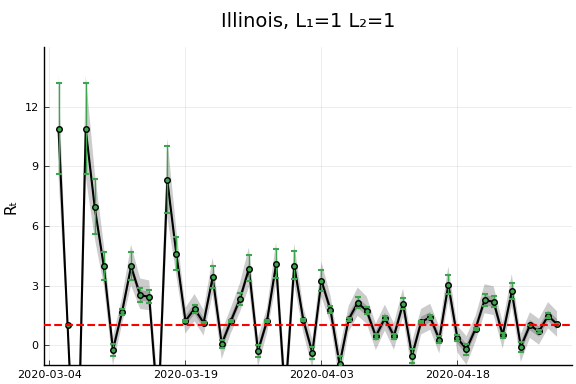
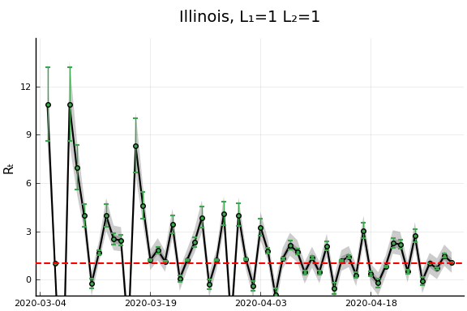
 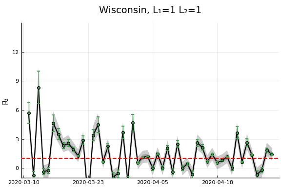
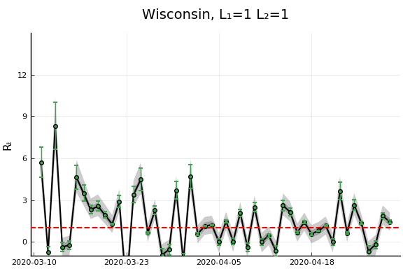 


 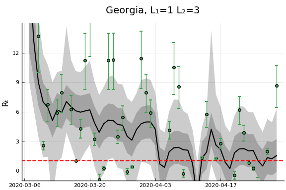
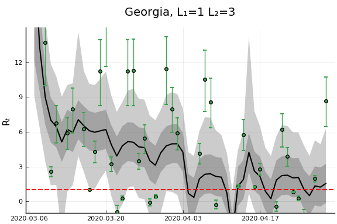  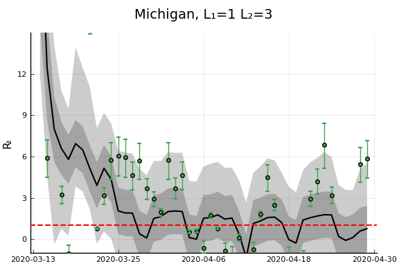 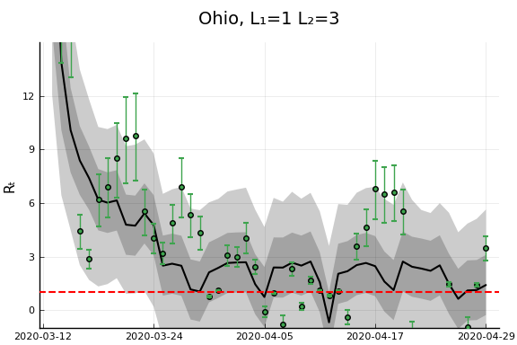
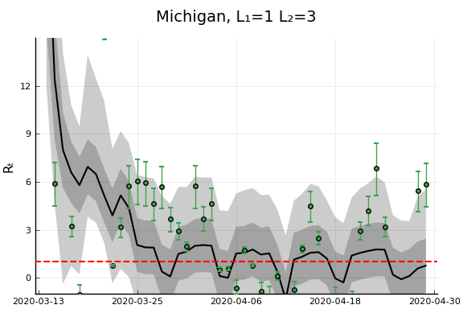 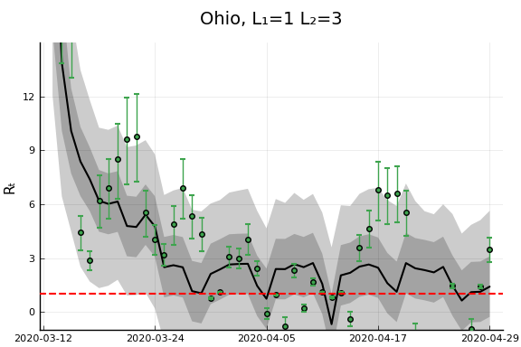

 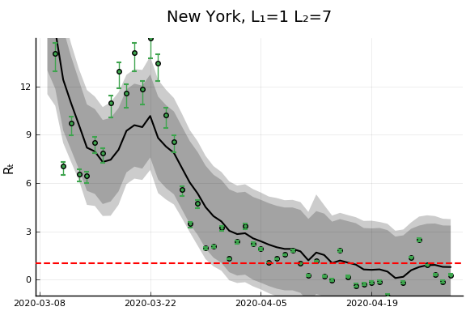
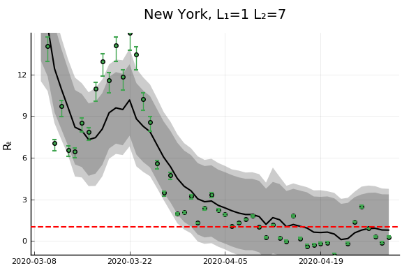 


 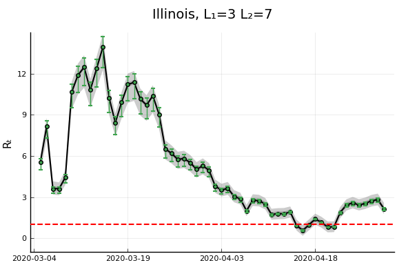
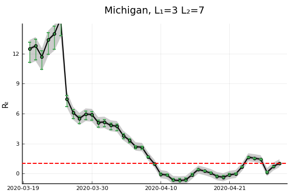
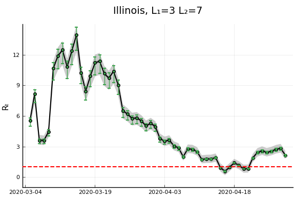
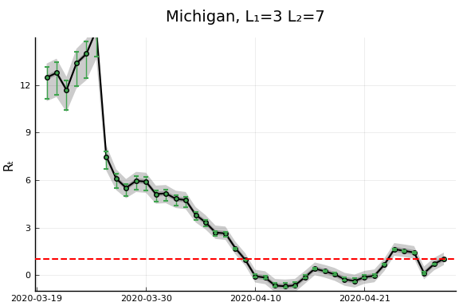 


 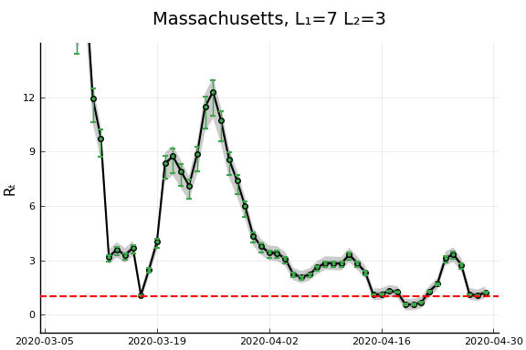
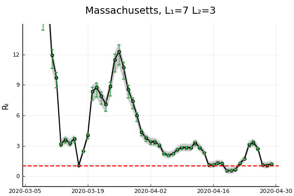 
 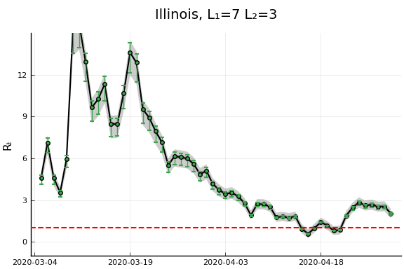
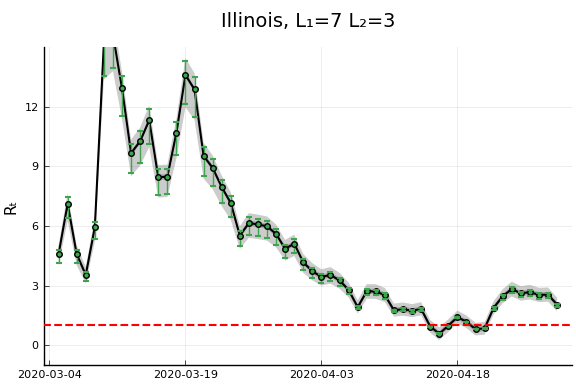


 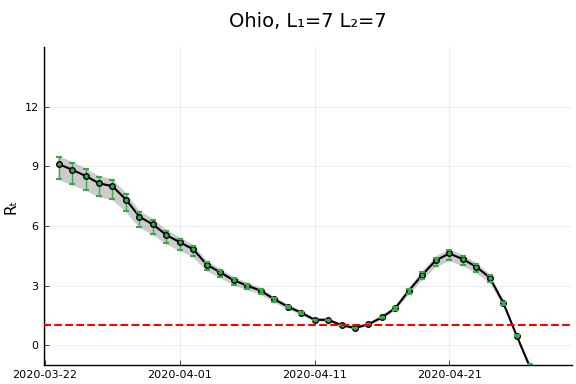
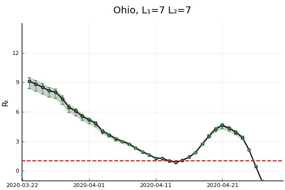